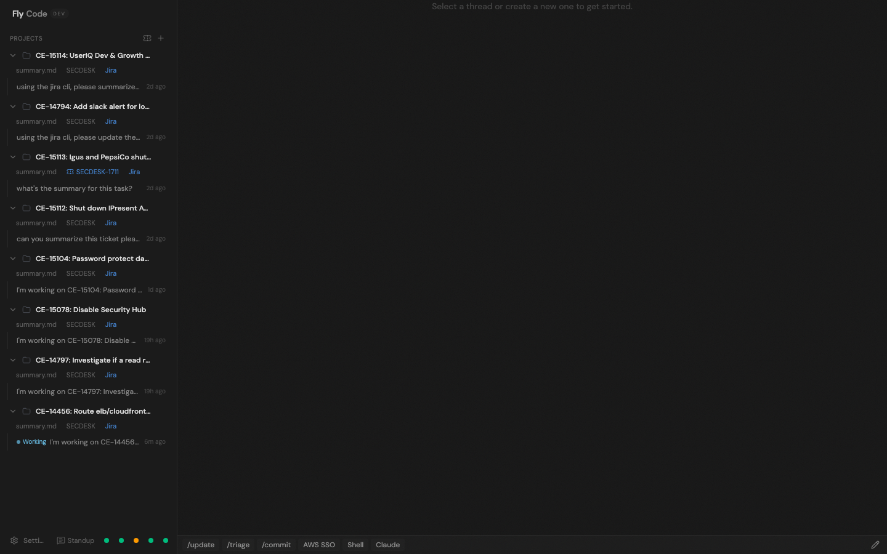
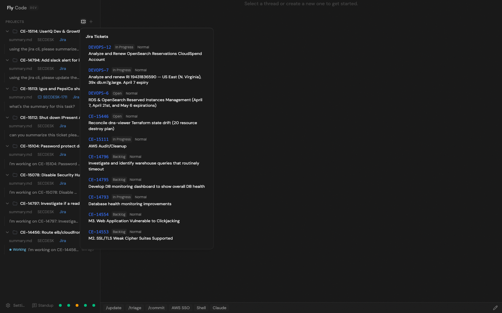
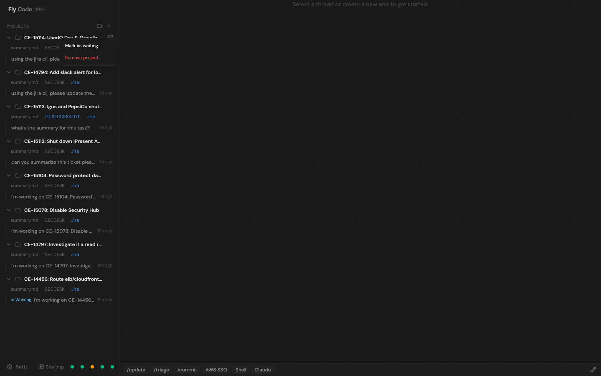
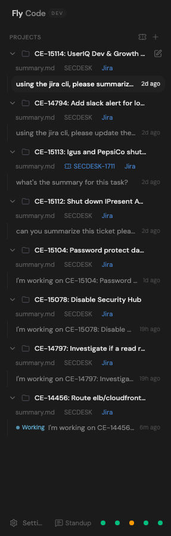
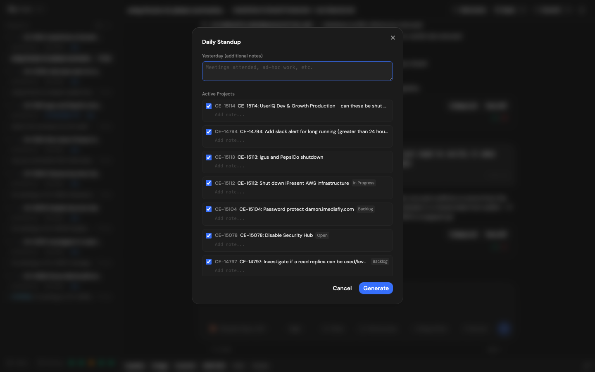
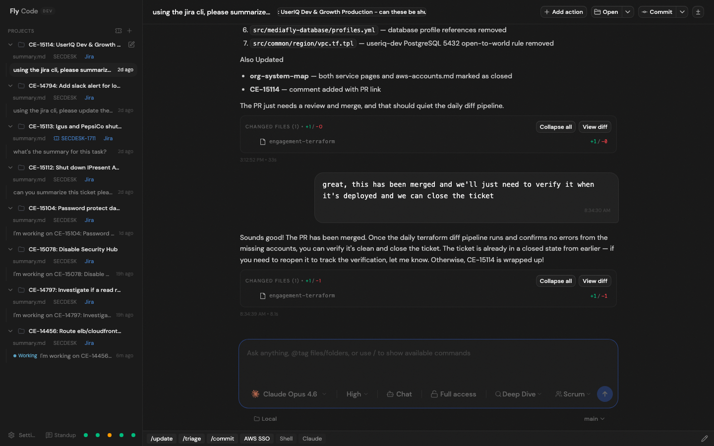
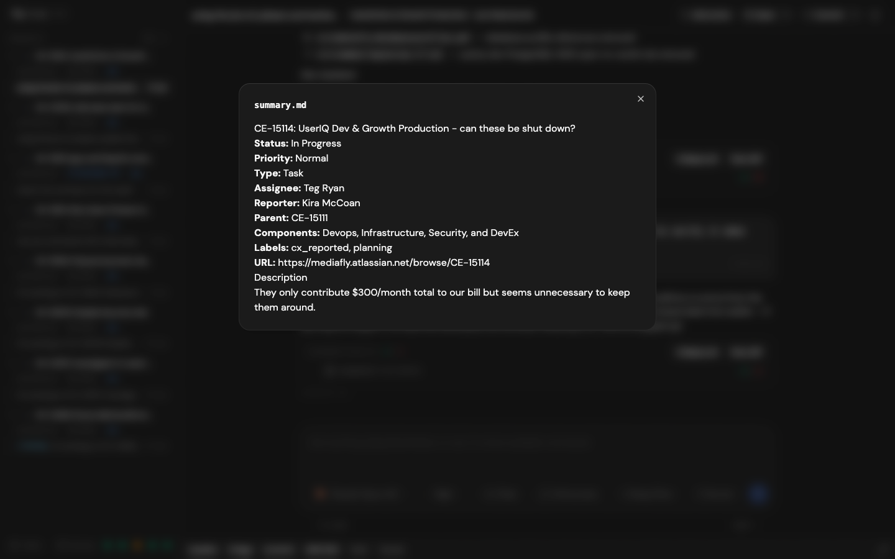

AI-Powered DevOps Workstation — Feature Overview
March 2026
Fly Code is a customized AI coding assistant built for infrastructure and DevOps workflows. It integrates directly with Jira, Jira Service Management (SECDESK), AWS, and Git to provide a unified workspace where AI agents have full context on every ticket they work on.

Fly Code main interface — sidebar with active projects, chat view, and command tray
Import Jira tickets directly into Fly Code as projects. Each imported ticket automatically:

Jira import dropdown — shows unresolved tickets assigned to you, filtered to exclude active projects
Right-click any project to toggle between Active and Waiting status. Waiting projects are visually dimmed and grouped separately in the sidebar. This status feeds into the daily standup generator.

Project context menu — toggle waiting status or remove projects
Each project in the sidebar shows:

Sidebar detail — SECDESK links (blue when filed), Jira links, summary.md buttons on every project
Create Jira Service Management (JSM) tickets directly from any project. Used for AWS account closures, access requests, and security operations.
Interactive two-step standup message builder:
Projects are automatically grouped by Active vs Waiting/Blocked status. The generated message follows the standard format: Yesterday / Today / Blockers.

Standup modal — select projects, add notes, generate Slack-ready message
Quick-action button bar at the bottom of the chat. Each button sends a command to either the chat (for AI slash commands) or the terminal (for shell commands).

Chat view with command tray — /update, /triage, /commit, AWS SSO, Shell, Claude buttons
/update, /triage, /commit (chat),
AWS SSO (terminal — runs aws sso login),
Shell, Claude.
Fully editable — add, remove, or reorder buttons via the edit dialog.
Auto-generated per project with:
Machine-readable metadata file with all Jira fields. Updated when SECDESK tickets are filed.

summary.md viewer — quick access to ticket metadata without leaving the app
Embedded in every CLAUDE.md, documents:
Recent hardening pass addressed 12 findings across the codebase:
| Category | Fix | Severity |
|---|---|---|
| Security | Auth token removed from terminal process environments | Critical |
| Security | Centralized credential handling (eliminated 3 inline .netrc readers) | High |
| Stability | Thread deletion no longer crashes the server | Critical |
| Stability | SQLite busy_timeout prevents write contention | High |
| Stability | Jira import rolls back on partial failure | High |
| Stability | Forked event streams log errors instead of dying silently | High |
| Usability | Checkpoint revert failures now surface to user | High |
| Usability | SECDESK follow-up failures show warning toasts | Medium |
| Stability | WebSocket listener errors are now logged | Medium |
| Data | Backfill migration for pre-existing project ticket keys | Medium |
| Layer | Technology |
|---|---|
| Frontend | React, TypeScript, Vite, TanStack Router/Query, Tailwind CSS |
| Backend | Effect-TS, WebSocket API, SQLite (WAL mode), Event Sourcing |
| Desktop | Electron (sandboxed, context-isolated) |
| Integrations | Jira REST API, JSM API, GitHub CLI, AWS SSO |
| AI Providers | Claude (Anthropic), configurable model selection |
| Auth | ~/.netrc (Jira/Bitbucket), local WebSocket token |
Fly Code — Built with Claude Code